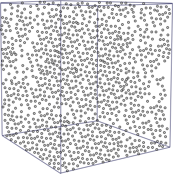
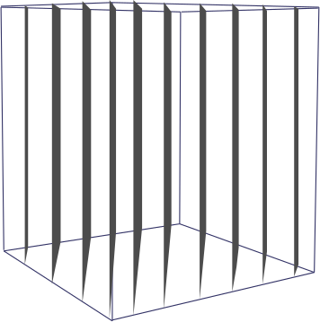

Random Bit Generation and Stream Ciphers
- Lecturer:
Prof. Dr. Michael Eichberg
- Version:
- 2023-10-19
- Based on:
Cryptography and Network Security - Principles and Practice, 8th Edition, William Stallings
Prof. Dr. Michael Eichberg
Cryptography and Network Security - Principles and Practice, 8th Edition, William Stallings
A number of network security algorithms and protocols based on cryptography make use of random binary numbers:
Key distribution and reciprocal wechselseitige authentication schemes
Session key generation
Generation of keys for the RSA public-key encryption algorithm
Generation of a bit stream for symmetric stream encryption
There are two distinct requirements for a sequence of random numbers:
Randomness
Unpredictability
The generation of a sequence of allegedly random numbers being random in some well-defined statistical sense has been a concern.
Two criteria are used to validate that a sequence of numbers is random:
The frequency of occurence of ones and zeros should be approximately equal.
No one subsequence in the sequence can be inferred from the others.
Expected distribution of random values in 3D space.
Distribution of supposedly random values of a bad rng in 3D space.
The requirement is not just that the sequence of numbers be statistically random, but that the successive members of the sequence are unpredictable
With true random sequences each number is statistically independent of other numbers in the sequence and therefore unpredictable.
True random numbers have their limitations, such as inefficiency, so it is more common to implement algorithms that generate sequences of numbers that appear to be random.
Care must be taken that an opponent not be able to predict future elements of the sequence on the basis of earlier elements.
Cryptographic applications typically make use of algorithmic techniques for random number generation.
These algorithms are deterministic and therefore produce sequences of numbers that are not statistically random
If the algorithm is good, the resulting sequences will pass many tests of randomness and are referred to as pseudorandom numbers.
Takes as input a source that is effectively random.
The source is referred to as an entropy source and is drawn from the physical environment of the computer:
Includes things such as keystroke timing patterns, disk electrical activity, mouse movements, and instantaneous values of the system clock
The source, or combination of sources, serve as input to an algorithm that produces random binary output
The TRNG may simply involve conversion of an analog source to a binary output
The TRNG may involve additional processing to overcome any bias in the source
Pseudorandom number generator
An algorithm that is used to produce an open-ended sequence of bits.
Input to a symmetric stream cipher is a common application for an open-ended sequence of bits.
Pseudorandom function (PRF)
Used to produce a pseudorandom string of bits of some fixed length.
Examples are symmetric encryption keys and nonces.
Takes as input a fixed value, called the seed, and produces a sequence of output bits using a deterministic algorithm.
Quite often the seed is generated by a TRNG
The output bit stream is determined solely by the input value or values, so an adversary who knows the algorithm and the seed can reproduce the entire bit stream!
Other than the number of bits produced there is no difference between a PRNG and a PRF.
The basic requirement when a PRNG or PRF is used for a cryptographic application is that an adversary who does not know the seed is unable to determine the pseudorandom string.
The requirement for secrecy of the output of a PRNG or PRF leads to specific requirements in the areas of:
Randomness
Unpredictability
Characteristics of the seed
The generated bit stream needs to appear random even though it is deterministic.
There is no single test that can determine if a PRNG generates numbers that have the characteristic of randomness
If the PRNG exhibits randomness on the basis of multiple tests, then it can be assumed to satisfy the randomness requirement
NIST SP 800-22 specifies that the tests should seek to establish three characteristics: (1) Uniformity, (2) Scalability, (3) Consistency
SP 800-22 lists 15 separate tests of randomness
The most basic test and must be included in any test suite
Purpose is to determine whether the number of ones and zeros in a sequence is approximately the same as would be expected for a truly random sequence
Focus of this test is the total number of runs in the sequence, where a run is an uninterrupted sequence of identical bits bounded before and after with a bit of the opposite value
Purpose is to determine whether the number of runs of ones and zeros of various lengths is as expected for a random sequence
Focus is the number of bits between matching patterns.
Purpose is to detect whether or not the sequence can be significantly compressed without loss of information. A significantly compressible sequence is considered to be non-random.
A stream of pseudorandom numbers should exhibit two forms of unpredictability:
If the seed is unknown, the next output bit in the sequence should be unpredictable in spite of any knowledge of previous bits in the sequence
It should not be feasible to determine the seed from knowledge of any generated values.
No correlation between a seed and any value generated from that seed should be evident.
Each element of the sequence should appear to be the outcome of an independent random event whose probability is 1/2
The same set of tests for randomness also provides a test of unpredictability: A random sequence will have no correlation with a fixed value (the seed).
The seed that serves as input to the PRNG must be secure and unpredictable
The seed itself must be a random or pseudorandom number
Typically the seed is generated by TRNG
Algorithms fall into two categories:
Purpose-built algorithms
Algorithms designed specifically and solely for the purpose of generating pseudorandom bit streams.
Algorithms based on existing cryptographic algorithms.
Have the effect of randomizing input data.
Three broad categories of cryptographic algorithms are commonly used to create PRNGs:
Symmetric block ciphers
Asymmetric ciphers
Hash functions and message authentication codes
An algorithm first proposed by Lehmer that is parameterized with four numbers:
\(m\)
the modulus
\(m > 0\)
\(a\)
the multiplier
\(0 < a< m\)
\(c\)
the increment
\(0\leq c < m\)
\(X_0\)
the starting value, or seed
\(0 \leq X0 < m\)
The sequence of random numbers \(\lbrace{X_n}\rbrace\) is obtained via the following iterative equation: \(X_{n+1} = (aX_n + c)\; mod\; m\)
If \(m\) , \(a\) , \(c\) , and \(X_0\) are integers, then this technique will produce a sequence of integers with each integer in the range \(0 \leq X_n < m\)
The selection of values for \(a\) , \(c\) , and \(m\) is critical in developing a good random number generator.
Has perhaps the strongest public proof of its cryptographic strength of any purpose-built algorithm.
Referred to as a cryptographically secure pseudorandom bit generator (CSPRBG)
A CSPRBG is defined as one that passes the next-bit-test if there is not a polynomial-time algorithm that, on input of the first k bits of an output sequence, can predict the (k + 1)st bit with probability significantly greater than 1/2
The security of BBS is based on the difficulty of factoring n.
\(n\) is the product of two (very large) primes \(n = pq\).
The seed s should be an integer that is co-prime to \(n\) (i.e. \(p\) and \(q\) are not factors of \(s\)) and not 1 or 0.
i |
x_i |
B_i |
|---|---|---|
0 |
20749 |
|
1 |
143135 |
1 |
2 |
177671 |
1 |
3 |
97048 |
0 |
4 |
89992 |
0 |
5 |
174051 |
1 |
6 |
80649 |
1 |
7 |
45663 |
1 |
8 |
69442 |
0 |
9 |
186894 |
0 |
10 |
177046 |
0 |
Two approaches that use a block cipher to build a PNRG have gained widespread acceptance:
CTR mode: Recommended in NIST SP 800-90, ANSI standard X.82, and RFC 4086
OFB mode: Recommended in X9.82 and RFC 4086
plaintext \(p_i\)
ciphertext \(c_i\)
keystream \(z_i\)
key K
Initialization Value IV
state \(\sigma_i\) next-state function f keystream function g
A pseudorandom number generator uses a function that produces a deterministic stream of bits that eventually repeats; the longer the period of repeat the more difficult it will be to do cryptanalysis
There should be an approximately equal number of 1s and 0s
If the keystream is treated as a stream of bytes, then all of the 256 possible byte values should appear approximately equally often
The output of the pseudorandom number generator is conditioned on the value of the input key
The same considerations that apply to block ciphers are valid
A potential advantage is that stream ciphers that do not use block ciphers as a building block are typically faster and use far less code than block ciphers.
A true random number generator (TRNG) uses a nondeterministic source to produce randomness
Most operate by measuring unpredictable natural processes such as pulse detectors of ionizing radiation events, gas discharge tubes, and leaky capacitors
Intel has developed a commercially available chip that samples thermal noise by amplifying the voltage measured across undriven resistors.
Pseudorandom Number Generators |
True Random Number Generators |
|
|---|---|---|
Efficiency |
Very efficient |
Generally inefficient |
Determinism |
Deterministic |
Nondeterministic |
Periodicity |
Periodic |
Aperiodic |
A TRNG may produce an output that is biased in some way (such as having more ones than zeros or vice versa)
Biased: NIST SP 800-90B defines a random process as biased with respect to an assumed discrete set of potential outcomes if some of those outcomes have a greater probability of occurring than do others.
Entropy rate: NIST 800-90B defines entropy rate as the rate at which a digitized noise source provides entropy
Is a measure of the randomness or unpredictability of a bit string.
Will be a value between 0 (no entropy) and 1 (full entropy)
Conditioning algorithms/deskewing algorithms:
Methods of modifying a bit stream to further randomize the bits
Typically conditioning is done by using a cryptographic algorithm to scramble the random bits so as to eliminate bias and increase entropy.
The two most common approaches are the use of a hash function or a symmetric block cipher.